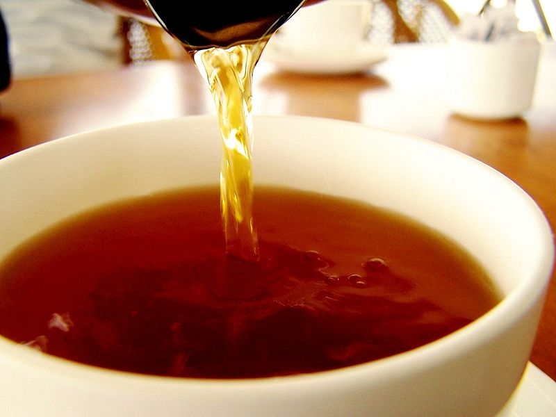

Користь і шкода чорного чаю
Міцно заварений чорний чай є улюбленим напоєм багатьох з нас. Ароматний напій, сильно насичений смаковими якостями чаю входить в щоденний раціон харчування величезної кількості людей. Але чому ми так любимо терпкий смак міцного чаю? Розглянемо корисні властивості міцно завареного чорного чаю і шкоду, яку він може завдати здоров'ю людини.
КОРОТКА ІСТОРІЯ ЧАЮ
Історія чаю починається в стародавньому Китаї. Китайці досить швидко розглянули в чашці міцного напою масу корисних властивостей. З Китаю чайне листя поширилися на територію сучасної Англії і Європи. Після цього ароматний напій став відомий всьому світу.
КОРИСТЬ МІЦНОГО ЧАЮ
Чай, сам по собі, як напій, безумовно, корисний. Але що ми знаємо про міцний чай? Мільйони людей щодня вживають сильно концентрований і терпкий напій, помічаючи масу корисних властивостей. Але чи так це?
Перш ніж почати вивчення користі міцного чаю, слід звернути увагу на головний компонент міцно завареного чайного напою - кофеїн. Від цієї інформації можна відштовхуватися в розкритті як корисних, так і шкідливих властивостей міцного чаю.
Міцний чай володіє наступними корисними властивостями:
- вміст антиоксидантів;
- антибактеріальна дія;
- заряд енергії та приплив бадьорості;
- бореться з мігренню і головними болями;
- запобігає розвитку карієсу, зміцнює зубну емаль;
- запобігає кисневому голодуванню головного мозку;
- усуває запальні процеси в кишечнику;
- виводить токсини і шлаки;
- знижує температуру тіла;
- підвищує низький артеріальний тиск;
- профілактика вірусних та інфекційних захворювань.
Міцний чай ефективно зміцнює імунітет, тим самим знижуючи ризик вірусних та інфекційних захворювань. Крім того, медики стверджують, що міцний чорний чай виступає ефективним профілактичним засобом при атеросклерозі, особливо на початкових стадіях розвитку.
Міцно заварений чай зміцнює і розширює кровоносні судини, запобігаючи мігрені, розвитку інсульту і інфаркту. Також, вживання міцного чаю покращує циркуляцію крові.
Сильно заварений чай корисний людям із захворюваннями шлунково-кишкового тракту. Корисні речовини, які містяться в міцному чорному чаї здатні відновлювати слизову шлунка і кишечника, тим самим нормалізуючи його мікрофлору.
ЯКОЇ ШКОДИ МІЦНИЙ ЧАЙ МОЖЕ ЗАВДАТИ ЗДОРОВ'Ю ЛЮДИНИ?
Міцний чай, звичайно, корисний напій і здатний швидко і ефективно допомогти при гіпотонії або розвитку застудного захворювання. Крім цих достоїнств, ми з'ясували ще цілий ряд корисних властивостей міцно завареного чаю, але що нам відомо про його шкоду і протипоказання?
Міцний чай протипоказаний в наступних випадках:
- гіпертонія;
- безсоння і неспокійний сон;
- невроз і психологічні розлади;
- захворювання печінки і нирок в гострій або хронічній стадії;
- дефіцит магнію;
- порушення роботи зору (високий внутрішньоочний тиск, глаукома);
- вагітність;
- період лактації.
Вивчивши питання про шкоду міцно завареного чаю, можна прийти до висновку, що напій корисний лише в помірній кількості, при відсутності вищеназваних захворювань. Щоб зберегти всю користь міцного чаю, необхідно, перш за все, вміти правильно його заварювати.
Джерело - http://vashaibolit.com.ua/4135-korist-shkoda-mcnogo-chayu.html